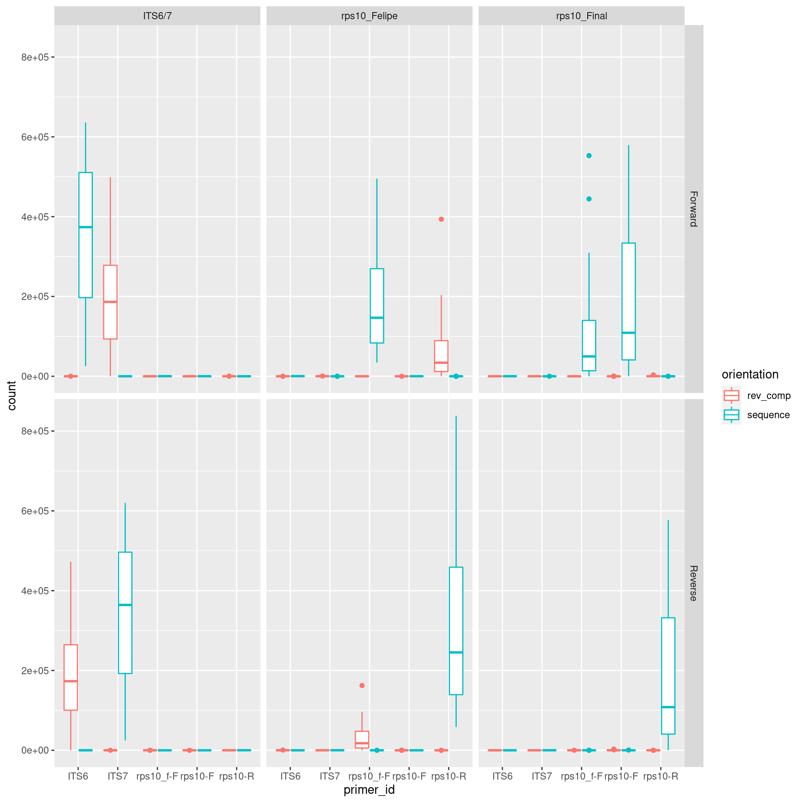
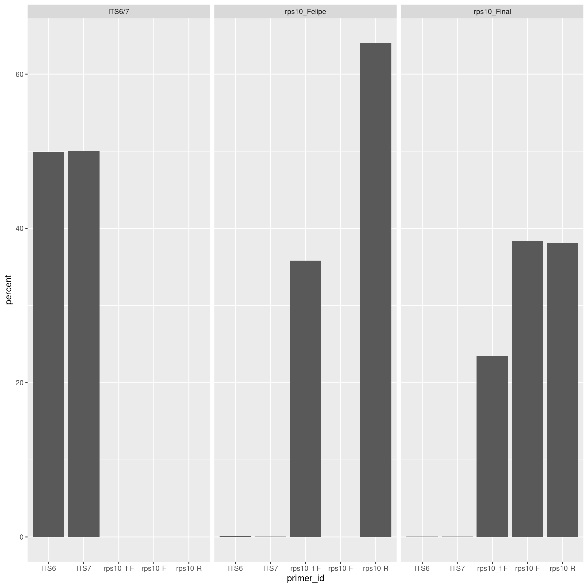
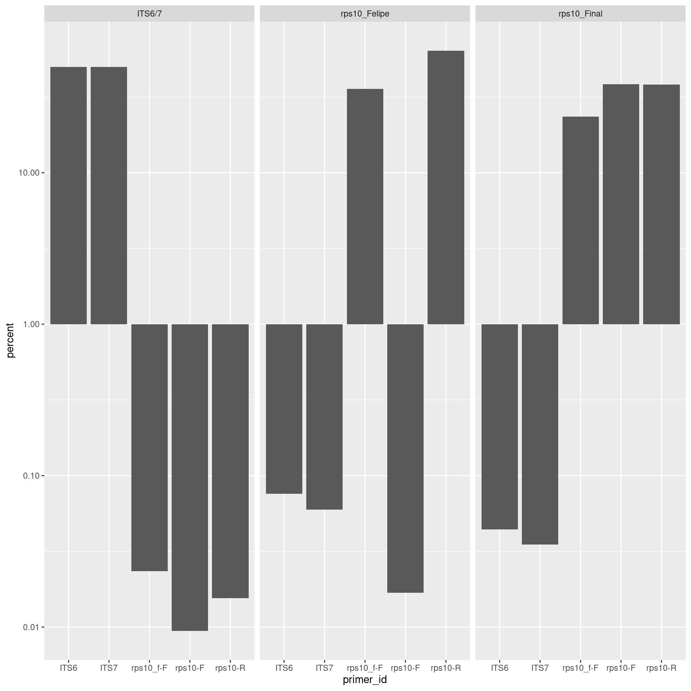
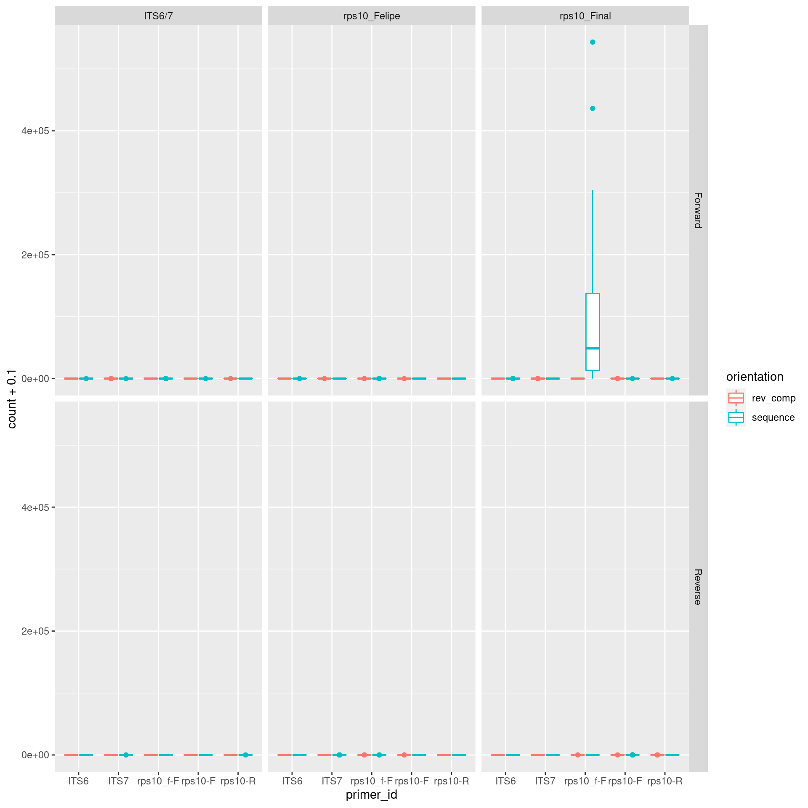
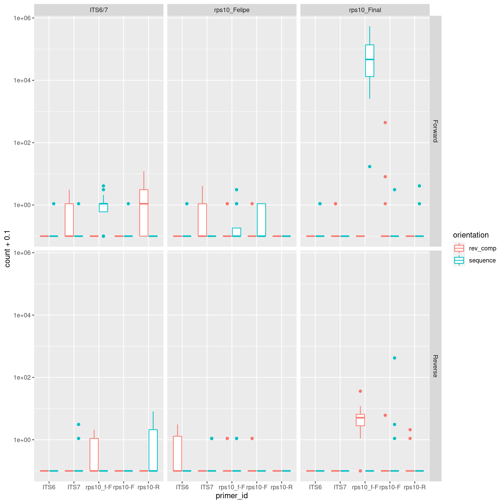

This is an analysis of the data from the MiSeq run testing the rps10 barcode and associated primers. Multiple mock community samples and environmental samples were sequenced. This will roughly follow the DADA2 ITS Pipeline Workflow (1.8) and the DADA2 Pipeline Tutorial (1.12).
Some of the long running operations that produce output files only run if their output does not exist. To rerun them, delete the corresponding file in the intermediate data folder.
library(dada2)
library(ShortRead)
library(Biostrings)
library(dplyr)
library(purrr)
library(furrr)
library(tidyr)
library(readr)
library(ggplot2)
library(gridExtra)
library(sessioninfo)seed <- 1
expected_error_filter_limit <- 5 # Default: no expected-error filtering (Inf)
truncation_qual_limit <- 5 # Default: 2
set.seed(seed)Commands that have “future” in them are run on multiple cores using the furrr and future packages.
plan(multiprocess)## Warning: [ONE-TIME WARNING] Forked processing ('multicore') is disabled
## in future (>= 1.13.0) when running R from RStudio, because it is
## considered unstable. Because of this, plan("multicore") will fall
## back to plan("sequential"), and plan("multiprocess") will fall back to
## plan("multisession") - not plan("multicore") as in the past. For more details,
## how to control forked processing or not, and how to silence this warning in
## future R sessions, see ?future::supportsMulticorefastq_dir_path <- "raw_data/sequences"
fastq_paths <- list.files(fastq_dir_path, pattern = "\\.fastq")
fastq_data <- tibble(file_id = sub(fastq_paths, pattern = "\\.fastq\\.gz$", replacement = ""),
sample_id = sub(fastq_paths, pattern = "_.+$", replacement = ""),
direction = c("Reverse", "Forward")[grepl(fastq_paths, pattern = "R1") + 1],
raw_path = file.path(fastq_dir_path, fastq_paths))
print(fastq_data)## # A tibble: 96 x 4
## file_id sample_id direction raw_path
## <chr> <chr> <chr> <chr>
## 1 A1_R1 A1 Forward raw_data/sequences/A1_R1.fastq.gz
## 2 A1_R2 A1 Reverse raw_data/sequences/A1_R2.fastq.gz
## 3 A2_R1 A2 Forward raw_data/sequences/A2_R1.fastq.gz
## 4 A2_R2 A2 Reverse raw_data/sequences/A2_R2.fastq.gz
## 5 A3_R1 A3 Forward raw_data/sequences/A3_R1.fastq.gz
## 6 A3_R2 A3 Reverse raw_data/sequences/A3_R2.fastq.gz
## 7 A4_R1 A4 Forward raw_data/sequences/A4_R1.fastq.gz
## 8 A4_R2 A4 Reverse raw_data/sequences/A4_R2.fastq.gz
## 9 A5_R1 A5 Forward raw_data/sequences/A5_R1.fastq.gz
## 10 A5_R2 A5 Reverse raw_data/sequences/A5_R2.fastq.gz
## # … with 86 more rowsThere were three different pairs of primers used. I renamed the primers manually from “cons”, “its”, and “f” in Felipe’s original sample metadata file. I will make two tables: one for the individual primers and one for the pairs of primers used.
primer_data_path <- file.path("raw_data", "primer_data.csv")
primer_data <- read_csv(primer_data_path)##
## ── Column specification ────────────────────────────────────────────────────────
## cols(
## primer_id = col_character(),
## locus = col_character(),
## direction = col_character(),
## sequence = col_character()
## )print(primer_data)## # A tibble: 5 x 4
## primer_id locus direction sequence
## <chr> <chr> <chr> <chr>
## 1 rps10-F rps10 Forward GTTGGTTAGAGYARAAGACT
## 2 rps10-R rps10 Reverse ATRYYTAGAAAGAYTYGAACT
## 3 rps10_f-F rps10 Forward TCTTTGTGTCRRTGGTTCR
## 4 ITS6 ITS Forward GAAGGTGAAGTCGTAACAAGG
## 5 ITS7 ITS Reverse AGCGTTCTTCATCGATGTGCprimer_pair_data_path <- file.path("raw_data", "primer_pair_data.csv")
primer_pair_data <- read_csv(primer_pair_data_path)##
## ── Column specification ────────────────────────────────────────────────────────
## cols(
## primer_pair_id = col_character(),
## felipes_id = col_character(),
## locus = col_character(),
## forward = col_character(),
## reverse = col_character()
## )print(primer_pair_data)## # A tibble: 3 x 5
## primer_pair_id felipes_id locus forward reverse
## <chr> <chr> <chr> <chr> <chr>
## 1 rps10_Final cons rps10 rps10-F rps10-R
## 2 rps10_Felipe f rps10 rps10_f-F rps10-R
## 3 ITS6/7 its ITS ITS6 ITS7I will edit the sample metadata some to make it more how I like it.
if (! dir.exists("intermediate_data")) {
dir.create("intermediate_data")
}
metadata_path <- file.path("raw_data", "metadata.csv")
modified_metadata_path <- file.path("intermediate_data", "metadata.csv")
metadata <- read_csv(metadata_path) %>%
arrange(well) %>%
rename(sample_id = well, primer_pair_id = primer, dna_type = origin, dna_sample_id = sample) %>%
left_join(primer_pair_data, by = c("primer_pair_id" = "felipes_id")) %>%
mutate(primer_pair_id = primer_pair_id.y) %>%
select(-primer_pair_id.y)##
## ── Column specification ────────────────────────────────────────────────────────
## cols(
## well = col_character(),
## primer = col_character(),
## origin = col_character(),
## sample = col_character()
## )I will also add a column to identify the type of sample:
metadata$sample_type <- 'Sample'
metadata$sample_type[grepl(metadata$dna_type, pattern = 'control')] <- 'Negative control'
metadata$sample_type[grepl(metadata$dna_type, pattern = 'mock')] <- 'Mock community'and I will save an edited version in the intermediate files to use in other analyses.
write_csv(metadata, modified_metadata_path)
print(metadata)## # A tibble: 48 x 8
## sample_id primer_pair_id dna_type dna_sample_id locus forward reverse
## <chr> <chr> <chr> <chr> <chr> <chr> <chr>
## 1 A1 rps10_Final mock1 mock1 rps10 rps10-F rps10-R
## 2 A2 rps10_Final leaf L95 rps10 rps10-F rps10-R
## 3 A3 rps10_Felipe mock1 mock1 rps10 rps10_… rps10-R
## 4 A4 rps10_Felipe leaf L95 rps10 rps10_… rps10-R
## 5 A5 ITS6/7 mock1 mock1 ITS ITS6 ITS7
## 6 A6 ITS6/7 leaf L95 ITS ITS6 ITS7
## 7 B1 rps10_Final mock2 mock2 rps10 rps10-F rps10-R
## 8 B2 rps10_Final WR.soil WS3 rps10 rps10-F rps10-R
## 9 B3 rps10_Felipe mock2 mock2 rps10 rps10_… rps10-R
## 10 B4 rps10_Felipe WR.soil WS3 rps10 rps10_… rps10-R
## # … with 38 more rows, and 1 more variable: sample_type <chr>One of the assumptions of this analysis is that forward and reverse reads are in matching order, so I will check that on one of the FASTQ files.
paired_file_paths <- fastq_data %>%
filter(sample_id == first(sample_id)) %>%
pull(raw_path)
get_read_names <- function(path) {
seqs <- readFastq(path)
sub(as.character(seqs@id), pattern = " .+$", replacement = "")
}
stopifnot(all(get_read_names(paired_file_paths[1]) == get_read_names(paired_file_paths[2])))Since it is possible for some small amplicons to read completely though, we have to check for both primer in both read, and just to be safe, in all possible orientations.
Since Ns can make it difficult to map short sequences, I will remove any sequences that have Ns and make a new set of sequence files.
prefiltered_read_dir <- file.path("intermediate_data", "prefiltered_sequences")
fastq_data$prefiltered_path <- file.path(prefiltered_read_dir, base::basename(fastq_data$raw_path))This will take a while:
if (! all(file.exists(fastq_data$prefiltered_path))) {
filterAndTrim(fwd = fastq_data[fastq_data$direction == "Forward", ][["raw_path"]],
filt = fastq_data[fastq_data$direction == "Forward", ][["prefiltered_path"]],
rev = fastq_data[fastq_data$direction == "Reverse", ][["raw_path"]],
filt.rev = fastq_data[fastq_data$direction == "Reverse", ][["prefiltered_path"]],
maxN = 0,
multithread = TRUE)
}## Creating output directory: intermediate_data/prefiltered_sequencesFor each primer I will generate the reverse, complement, and reverse complement, so I can check for any unusual read orientation. First I will need to get the sequences for each of the possible orientations.
primer_data$complement <- map_chr(primer_data$sequence, function(x) toString(complement(DNAString(x))))
primer_data$reverse <- map_chr(primer_data$sequence, function(x) toString(reverse(DNAString(x))))
primer_data$rev_comp <- map_chr(primer_data$sequence, function(x) toString(reverseComplement(DNAString(x))))
primer_hit_data <- gather(primer_data, key = "orientation", value = "sequence", sequence, complement, reverse, rev_comp)
print(primer_hit_data)## # A tibble: 20 x 5
## primer_id locus direction orientation sequence
## <chr> <chr> <chr> <chr> <chr>
## 1 rps10-F rps10 Forward sequence GTTGGTTAGAGYARAAGACT
## 2 rps10-R rps10 Reverse sequence ATRYYTAGAAAGAYTYGAACT
## 3 rps10_f-F rps10 Forward sequence TCTTTGTGTCRRTGGTTCR
## 4 ITS6 ITS Forward sequence GAAGGTGAAGTCGTAACAAGG
## 5 ITS7 ITS Reverse sequence AGCGTTCTTCATCGATGTGC
## 6 rps10-F rps10 Forward complement CAACCAATCTCRTYTTCTGA
## 7 rps10-R rps10 Reverse complement TAYRRATCTTTCTRARCTTGA
## 8 rps10_f-F rps10 Forward complement AGAAACACAGYYACCAAGY
## 9 ITS6 ITS Forward complement CTTCCACTTCAGCATTGTTCC
## 10 ITS7 ITS Reverse complement TCGCAAGAAGTAGCTACACG
## 11 rps10-F rps10 Forward reverse TCAGAARAYGAGATTGGTTG
## 12 rps10-R rps10 Reverse reverse TCAAGYTYAGAAAGATYYRTA
## 13 rps10_f-F rps10 Forward reverse RCTTGGTRRCTGTGTTTCT
## 14 ITS6 ITS Forward reverse GGAACAATGCTGAAGTGGAAG
## 15 ITS7 ITS Reverse reverse CGTGTAGCTACTTCTTGCGA
## 16 rps10-F rps10 Forward rev_comp AGTCTTYTRCTCTAACCAAC
## 17 rps10-R rps10 Reverse rev_comp AGTTCRARTCTTTCTARRYAT
## 18 rps10_f-F rps10 Forward rev_comp YGAACCAYYGACACAAAGA
## 19 ITS6 ITS Forward rev_comp CCTTGTTACGACTTCACCTTC
## 20 ITS7 ITS Reverse rev_comp GCACATCGATGAAGAACGCTThis is a function copied from the DADA2 ITS Pipeline Workflow (1.8) to count number of times a sequence appears in a fastq.
primer_hits <- function(primer, path) {
# Counts number of reads in which the primer is found
nhits <- vcountPattern(primer, sread(readFastq(path)), fixed = FALSE)
return(sum(nhits > 0))
}This will take a while:
primer_hit_data_csv_path <- file.path("intermediate_data", "primer_hit_data.csv")
if (file.exists(primer_hit_data_csv_path)) {
primer_hit_data <- read_csv(primer_hit_data_csv_path)
} else {
primer_hit_counts <- future_map(fastq_data$prefiltered_path,
function (a_path) map_dbl(primer_hit_data$sequence, primer_hits, path = a_path))
names(primer_hit_counts) <- fastq_data$file_id
primer_hit_data <- bind_cols(primer_hit_data, as_tibble(primer_hit_counts))
write_csv(primer_hit_data, primer_hit_data_csv_path)
}
print(primer_hit_data)## # A tibble: 20 x 101
## primer_id locus direction orientation sequence A1_R1 A1_R2 A2_R1 A2_R2
## <chr> <chr> <chr> <chr> <chr> <dbl> <dbl> <dbl> <dbl>
## 1 rps10-F rps10 Forward sequence GTTGGTT… 430898 2 66957 0
## 2 rps10-R rps10 Reverse sequence ATRYYTA… 3 426198 0 65841
## 3 rps10_f-F rps10 Forward sequence TCTTTGT… 444430 4 64501 0
## 4 ITS6 ITS Forward sequence GAAGGTG… 262 0 43 0
## 5 ITS7 ITS Reverse sequence AGCGTTC… 0 147 0 21
## 6 rps10-F rps10 Forward complement CAACCAA… 0 0 0 0
## 7 rps10-R rps10 Reverse complement TAYRRAT… 0 0 0 0
## 8 rps10_f-F rps10 Forward complement AGAAACA… 0 0 0 0
## 9 ITS6 ITS Forward complement CTTCCAC… 0 0 0 0
## 10 ITS7 ITS Reverse complement TCGCAAG… 0 0 0 0
## 11 rps10-F rps10 Forward reverse TCAGAAR… 0 0 0 0
## 12 rps10-R rps10 Reverse reverse TCAAGYT… 0 0 0 0
## 13 rps10_f-F rps10 Forward reverse RCTTGGT… 0 0 0 0
## 14 ITS6 ITS Forward reverse GGAACAA… 0 0 0 0
## 15 ITS7 ITS Reverse reverse CGTGTAG… 0 0 0 0
## 16 rps10-F rps10 Forward rev_comp AGTCTTY… 0 63 0 855
## 17 rps10-R rps10 Reverse rev_comp AGTTCRA… 113 0 880 0
## 18 rps10_f-F rps10 Forward rev_comp YGAACCA… 0 48 0 5
## 19 ITS6 ITS Forward rev_comp CCTTGTT… 0 34 0 5
## 20 ITS7 ITS Reverse rev_comp GCACATC… 78 0 16 0
## # … with 92 more variables: A3_R1 <dbl>, A3_R2 <dbl>, A4_R1 <dbl>, A4_R2 <dbl>,
## # A5_R1 <dbl>, A5_R2 <dbl>, A6_R1 <dbl>, A6_R2 <dbl>, B1_R1 <dbl>,
## # B1_R2 <dbl>, B2_R1 <dbl>, B2_R2 <dbl>, B3_R1 <dbl>, B3_R2 <dbl>,
## # B4_R1 <dbl>, B4_R2 <dbl>, B5_R1 <dbl>, B5_R2 <dbl>, B6_R1 <dbl>,
## # B6_R2 <dbl>, C1_R1 <dbl>, C1_R2 <dbl>, C2_R1 <dbl>, C2_R2 <dbl>,
## # C3_R1 <dbl>, C3_R2 <dbl>, C4_R1 <dbl>, C4_R2 <dbl>, C5_R1 <dbl>,
## # C5_R2 <dbl>, C6_R1 <dbl>, C6_R2 <dbl>, D1_R1 <dbl>, D1_R2 <dbl>,
## # D2_R1 <dbl>, D2_R2 <dbl>, D3_R1 <dbl>, D3_R2 <dbl>, D4_R1 <dbl>,
## # D4_R2 <dbl>, D5_R1 <dbl>, D5_R2 <dbl>, D6_R1 <dbl>, D6_R2 <dbl>,
## # E1_R1 <dbl>, E1_R2 <dbl>, E2_R1 <dbl>, E2_R2 <dbl>, E3_R1 <dbl>,
## # E3_R2 <dbl>, E4_R1 <dbl>, E4_R2 <dbl>, E5_R1 <dbl>, E5_R2 <dbl>,
## # E6_R1 <dbl>, E6_R2 <dbl>, F1_R1 <dbl>, F1_R2 <dbl>, F2_R1 <dbl>,
## # F2_R2 <dbl>, F3_R1 <dbl>, F3_R2 <dbl>, F4_R1 <dbl>, F4_R2 <dbl>,
## # F5_R1 <dbl>, F5_R2 <dbl>, F6_R1 <dbl>, F6_R2 <dbl>, G1_R1 <dbl>,
## # G1_R2 <dbl>, G2_R1 <dbl>, G2_R2 <dbl>, G3_R1 <dbl>, G3_R2 <dbl>,
## # G4_R1 <dbl>, G4_R2 <dbl>, G5_R1 <dbl>, G5_R2 <dbl>, G6_R1 <dbl>,
## # G6_R2 <dbl>, H1_R1 <dbl>, H1_R2 <dbl>, H2_R1 <dbl>, H2_R2 <dbl>,
## # H3_R1 <dbl>, H3_R2 <dbl>, H4_R1 <dbl>, H4_R2 <dbl>, H5_R1 <dbl>,
## # H5_R2 <dbl>, H6_R1 <dbl>, H6_R2 <dbl>The complement and reverse of any of the primers are never detected:
primer_hit_data %>%
filter(orientation %in% c("complement", "reverse")) %>%
select(!!! fastq_data$file_id) %>%
sum()## [1] 0So I will remove those rows to make things easier to analyze.
primer_hit_data <- filter(primer_hit_data, ! orientation %in% c("complement", "reverse"))Now I can look at what primers were detected in which samples, grouping samples by the primer pair used.
primer_hit_data %>%
gather(key = "file_id", value = "count", !!! fastq_data$file_id) %>%
mutate(sample_id = sub(file_id, pattern = "_R[12]$", replacement = "")) %>%
left_join(metadata, by = "sample_id") %>%
left_join(fastq_data, by = "file_id") %>%
select(primer_id, primer_direction = direction.x, orientation, count, sample_id = sample_id.x, primer_pair_id, forward, reverse, read_direction = direction.y) %>%
ggplot(aes(x = primer_id, y = count, color = orientation)) +
geom_boxplot() +
facet_grid(read_direction ~ primer_pair_id)
It looks like the expected primer was found most often and in ITS6/7 and rps10_felipe there was some reads that extended into the other primer since the reverse complement of the other primer was found at a lower rate. The rps10_f-F primer was also found in the samples with the standard rps10-F primers. This is to be expected, since the rps10_f-F primers sequences occurs in the rps10_Final amplicon sequences (i.e. rps10_Final is a bigger amplcion that contains rps10_Felipe).
If we look at just how many primer sequences appeared in samples sequenced with different primer pairs, we see a similar pattern:
per_primer_pair_hits <- primer_hit_data %>%
gather(key = "file_id", value = "count", !!! fastq_data$file_id) %>%
mutate(sample_id = sub(file_id, pattern = "_R[12]$", replacement = "")) %>%
left_join(metadata, by = "sample_id") %>%
left_join(fastq_data, by = "file_id") %>%
select(primer_id, primer_direction = direction.x, orientation, count, sample_id = sample_id.x, primer_pair_id, forward, reverse, read_direction = direction.y) %>%
group_by(primer_pair_id, primer_id) %>%
summarise(count = sum(count)) %>%
group_by(primer_pair_id) %>%
mutate(percent = count / sum(count) * 100)## `summarise()` regrouping output by 'primer_pair_id' (override with `.groups` argument)print(per_primer_pair_hits)## # A tibble: 15 x 4
## # Groups: primer_pair_id [3]
## primer_pair_id primer_id count percent
## <chr> <chr> <dbl> <dbl>
## 1 ITS6/7 ITS6 8785418 49.9
## 2 ITS6/7 ITS7 8819864 50.1
## 3 ITS6/7 rps10_f-F 4129 0.0234
## 4 ITS6/7 rps10-F 1660 0.00942
## 5 ITS6/7 rps10-R 2729 0.0155
## 6 rps10_Felipe ITS6 7821 0.0761
## 7 rps10_Felipe ITS7 6144 0.0598
## 8 rps10_Felipe rps10_f-F 3681743 35.8
## 9 rps10_Felipe rps10-F 1731 0.0168
## 10 rps10_Felipe rps10-R 6581319 64.0
## 11 rps10_Final ITS6 3752 0.0443
## 12 rps10_Final ITS7 2969 0.0350
## 13 rps10_Final rps10_f-F 1988949 23.5
## 14 rps10_Final rps10-F 3248909 38.3
## 15 rps10_Final rps10-R 3229644 38.1Plotting makes it apparent that the correct primers are found the vast majority of the time:
primer_plot <- per_primer_pair_hits %>%
ggplot(aes(x = primer_id, y = percent)) +
geom_bar(stat = "identity") +
facet_wrap(. ~ primer_pair_id)
print(primer_plot)
However, log scaling shows that there are some unexpected primers occurring in around 0.1% to 0.01% of reads.
primer_plot +
scale_y_log10()
We can quickly calculate the total percentage of unexpected primer hit using the fact that they are always less than 1% of reads:
sum(per_primer_pair_hits$count[per_primer_pair_hits$percent < 1]) / sum(per_primer_pair_hits$count)## [1] 0.0008506389This might represent the index switching known to occur in MiSeq sequencing.
First lets check if cutadapt is installed.
tryCatch(system2("cutadapt", args = "--version"),
warning=function(w) {
stop("cutadapt cannot be found on PATH. Is it installed?")
})We next need a place to put the results of both reads that were trimmed successfully and those that were not.
trimmed_read_dir <- file.path("intermediate_data", "trimmed_sequences")
if (! dir.exists(trimmed_read_dir)) {
dir.create(trimmed_read_dir)
}
fastq_data$trimmed_path <- file.path(trimmed_read_dir, paste0(fastq_data$file_id, ".fastq.gz"))
untrimmed_read_dir <- file.path("intermediate_data", "untrimmed_sequences")
if (! dir.exists(untrimmed_read_dir)) {
dir.create(untrimmed_read_dir)
}
fastq_data$untrimmed_path <- file.path(untrimmed_read_dir, paste0(fastq_data$file_id, ".fastq.gz"))Since there are three different sets of primers used, three different types of cutadapt commands must be applied. The code below makes a cutadapt command for each sample.
cutadapt_data <- metadata %>%
select(sample_id, forward_id = forward, reverse_id = reverse) %>%
left_join(primer_data[, c("primer_id", "sequence", "rev_comp")], by = c("forward_id" = "primer_id")) %>%
rename(forward_seq = sequence, forward_seq_rc = rev_comp) %>%
left_join(primer_data[, c("primer_id", "sequence", "rev_comp")], by = c("reverse_id" = "primer_id")) %>%
rename(reverse_seq = sequence, reverse_seq_rc = rev_comp) %>%
select(-forward_id, -reverse_id)
cutadapt_data <- fastq_data %>%
filter(direction == "Forward") %>%
select(sample_id, prefiltered_path, trimmed_path, untrimmed_path) %>%
right_join(cutadapt_data, by = "sample_id") %>%
rename(forward_input_path = prefiltered_path,
forward_output_path = trimmed_path,
forward_untrimmed_path = untrimmed_path)
cutadapt_data <- fastq_data %>%
filter(direction == "Reverse") %>%
select(sample_id, prefiltered_path, trimmed_path, untrimmed_path) %>%
right_join(cutadapt_data, by = "sample_id") %>%
rename(reverse_input_path = prefiltered_path,
reverse_output_path = trimmed_path,
reverse_untrimmed_path = untrimmed_path)
cutadapt_info_dir <- file.path("intermediate_data", "cutadapt_info")
if (! dir.exists(cutadapt_info_dir)) {
dir.create(cutadapt_info_dir)
}
cutadapt_data$info_path <- file.path(cutadapt_info_dir, paste0(cutadapt_data$sample_id, ".txt"))
cutadapt_data <- cutadapt_data %>%
mutate(command_args = paste(
"-g", forward_seq,
"-a", reverse_seq_rc,
"-G", reverse_seq,
"-A", forward_seq_rc,
"-n", 2, # -n 2 required to remove FWD and REV from reads
"-o", forward_output_path,
"-p", reverse_output_path,
"--minimum-length", 50,
"--untrimmed-output", forward_untrimmed_path,
"--untrimmed-paired-output", reverse_untrimmed_path,
"--quiet",
# "--info-file", info_path,
forward_input_path,
reverse_input_path
))
print(cutadapt_data)## # A tibble: 48 x 13
## sample_id reverse_input_p… reverse_output_… reverse_untrimm… forward_input_p…
## <chr> <chr> <chr> <chr> <chr>
## 1 A1 intermediate_da… intermediate_da… intermediate_da… intermediate_da…
## 2 A2 intermediate_da… intermediate_da… intermediate_da… intermediate_da…
## 3 A3 intermediate_da… intermediate_da… intermediate_da… intermediate_da…
## 4 A4 intermediate_da… intermediate_da… intermediate_da… intermediate_da…
## 5 A5 intermediate_da… intermediate_da… intermediate_da… intermediate_da…
## 6 A6 intermediate_da… intermediate_da… intermediate_da… intermediate_da…
## 7 B1 intermediate_da… intermediate_da… intermediate_da… intermediate_da…
## 8 B2 intermediate_da… intermediate_da… intermediate_da… intermediate_da…
## 9 B3 intermediate_da… intermediate_da… intermediate_da… intermediate_da…
## 10 B4 intermediate_da… intermediate_da… intermediate_da… intermediate_da…
## # … with 38 more rows, and 8 more variables: forward_output_path <chr>,
## # forward_untrimmed_path <chr>, forward_seq <chr>, forward_seq_rc <chr>,
## # reverse_seq <chr>, reverse_seq_rc <chr>, info_path <chr>,
## # command_args <chr>And now we can run the commands. This will take a while.
if (! all(file.exists(c(fastq_data$trimmed_path, fastq_data$untrimmed_path)))) {
cutadapt_output <- future_map(cutadapt_data$command_args, ~system2("cutadapt", args = .x))
}This will take a while:
cutadapt_verify_path <- file.path("intermediate_data", "cutadapt_verify_data.csv")
if (file.exists(cutadapt_verify_path)) {
cutadapt_verify_data <- read_csv(cutadapt_verify_path)
} else {
primer_hit_counts <- future_map(fastq_data$trimmed_path,
function (a_path) map_dbl(primer_hit_data$sequence, primer_hits, path = a_path))
names(primer_hit_counts) <- fastq_data$file_id
cutadapt_verify_data <- primer_hit_data
cutadapt_verify_data[names(primer_hit_counts)] <- primer_hit_counts
write_csv(cutadapt_verify_data, cutadapt_verify_path)
}
print(cutadapt_verify_data)## # A tibble: 10 x 101
## primer_id locus direction orientation sequence A1_R1 A1_R2 A2_R1 A2_R2 A3_R1
## <chr> <chr> <chr> <chr> <chr> <dbl> <dbl> <dbl> <dbl> <dbl>
## 1 rps10-F rps10 Forward sequence GTTGGTT… 0 0 0 0 0
## 2 rps10-R rps10 Reverse sequence ATRYYTA… 0 0 0 0 0
## 3 rps10_f-F rps10 Forward sequence TCTTTGT… 436178 0 63394 0 0
## 4 ITS6 ITS Forward sequence GAAGGTG… 1 0 0 0 0
## 5 ITS7 ITS Reverse sequence AGCGTTC… 0 0 0 0 0
## 6 rps10-F rps10 Forward rev_comp AGTCTTY… 0 0 0 0 0
## 7 rps10-R rps10 Reverse rev_comp AGTTCRA… 0 0 0 0 0
## 8 rps10_f-F rps10 Forward rev_comp YGAACCA… 0 36 0 1 0
## 9 ITS6 ITS Forward rev_comp CCTTGTT… 0 0 0 0 0
## 10 ITS7 ITS Reverse rev_comp GCACATC… 0 0 1 0 0
## # … with 91 more variables: A3_R2 <dbl>, A4_R1 <dbl>, A4_R2 <dbl>, A5_R1 <dbl>,
## # A5_R2 <dbl>, A6_R1 <dbl>, A6_R2 <dbl>, B1_R1 <dbl>, B1_R2 <dbl>,
## # B2_R1 <dbl>, B2_R2 <dbl>, B3_R1 <dbl>, B3_R2 <dbl>, B4_R1 <dbl>,
## # B4_R2 <dbl>, B5_R1 <dbl>, B5_R2 <dbl>, B6_R1 <dbl>, B6_R2 <dbl>,
## # C1_R1 <dbl>, C1_R2 <dbl>, C2_R1 <dbl>, C2_R2 <dbl>, C3_R1 <dbl>,
## # C3_R2 <dbl>, C4_R1 <dbl>, C4_R2 <dbl>, C5_R1 <dbl>, C5_R2 <dbl>,
## # C6_R1 <dbl>, C6_R2 <dbl>, D1_R1 <dbl>, D1_R2 <dbl>, D2_R1 <dbl>,
## # D2_R2 <dbl>, D3_R1 <dbl>, D3_R2 <dbl>, D4_R1 <dbl>, D4_R2 <dbl>,
## # D5_R1 <dbl>, D5_R2 <dbl>, D6_R1 <dbl>, D6_R2 <dbl>, E1_R1 <dbl>,
## # E1_R2 <dbl>, E2_R1 <dbl>, E2_R2 <dbl>, E3_R1 <dbl>, E3_R2 <dbl>,
## # E4_R1 <dbl>, E4_R2 <dbl>, E5_R1 <dbl>, E5_R2 <dbl>, E6_R1 <dbl>,
## # E6_R2 <dbl>, F1_R1 <dbl>, F1_R2 <dbl>, F2_R1 <dbl>, F2_R2 <dbl>,
## # F3_R1 <dbl>, F3_R2 <dbl>, F4_R1 <dbl>, F4_R2 <dbl>, F5_R1 <dbl>,
## # F5_R2 <dbl>, F6_R1 <dbl>, F6_R2 <dbl>, G1_R1 <dbl>, G1_R2 <dbl>,
## # G2_R1 <dbl>, G2_R2 <dbl>, G3_R1 <dbl>, G3_R2 <dbl>, G4_R1 <dbl>,
## # G4_R2 <dbl>, G5_R1 <dbl>, G5_R2 <dbl>, G6_R1 <dbl>, G6_R2 <dbl>,
## # H1_R1 <dbl>, H1_R2 <dbl>, H2_R1 <dbl>, H2_R2 <dbl>, H3_R1 <dbl>,
## # H3_R2 <dbl>, H4_R1 <dbl>, H4_R2 <dbl>, H5_R1 <dbl>, H5_R2 <dbl>,
## # H6_R1 <dbl>, H6_R2 <dbl>We can now do a similar graph to what was done before:
cutadapt_plot <- cutadapt_verify_data %>%
gather(key = "file_id", value = "count", !!! fastq_data$file_id) %>%
mutate(sample_id = sub(file_id, pattern = "_R[12]$", replacement = "")) %>%
left_join(metadata, by = "sample_id") %>%
left_join(fastq_data, by = "file_id") %>%
select(primer_id, primer_direction = direction.x, orientation, count, sample_id = sample_id.x, primer_pair_id, forward, reverse, read_direction = direction.y) %>%
ggplot(aes(x = primer_id, y = count + 0.1, color = orientation)) +
geom_boxplot() +
facet_grid(read_direction ~ primer_pair_id)
print(cutadapt_plot)
The rps10_f is expected to be found in rps10_final, so that OK. If we log scale the y axis we can see there are some other primers left over, but not many in most samples.
cutadapt_plot +
scale_y_log10()
First I will make plots for each sample:
sample_quality_plot_dir <- file.path("results", "sample_quality_plots")
if (! dir.exists(sample_quality_plot_dir)) {
dir.create(sample_quality_plot_dir, recursive = TRUE)
}
sample_quality_plots <- future_map(metadata$sample_id,
.options = furrr_options(seed = seed),
function(id) {
title <- paste0(metadata[metadata$sample_id == id, 1:3], collapse = "--") %>%
gsub(pattern = "/", replacement = "_", fixed = TRUE)
plot <- plotQualityProfile(fastq_data$trimmed_path[fastq_data$sample_id == id]) +
ggtitle(title)
ggsave(plot,
filename = paste0(title, ".pdf"),
width = 7, height = 7 / 1.618,
path = sample_quality_plot_dir)
return(plot)
})And plots for each primer pair:
primer_quality_plots <- future_map(unique(metadata$primer_pair_id),
.options = furrr_options(seed = seed),
function(id) {
sample_ids <- metadata$sample_id[metadata$primer_pair_id == id]
forward_paths <- fastq_data %>%
filter(sample_id %in% sample_ids, direction == "Forward") %>%
pull(trimmed_path)
reverse_paths <- fastq_data %>%
filter(sample_id %in% sample_ids, direction == "Reverse") %>%
pull(trimmed_path)
forward_plot <- plotQualityProfile(forward_paths) +
ggtitle(paste(id, "Forward"))
reverse_plot <- plotQualityProfile(forward_paths) +
ggtitle(paste(id, "Reverse"))
combined_plot <- gridExtra::grid.arrange(forward_plot, reverse_plot)
ggsave(combined_plot,
filename = paste0(gsub(id, pattern = "/", replacement = "_", fixed = TRUE), ".pdf"),
width = 10, height = 16.18,
path = sample_quality_plot_dir)
plot(combined_plot)
return(combined_plot)
})And plots for each sample type:
primer_quality_plots <- future_map(unique(metadata$dna_type),
.options = furrr_options(seed = seed),
function(type) {
sample_ids <- metadata$sample_id[metadata$dna_type == type]
forward_paths <- fastq_data %>%
filter(sample_id %in% sample_ids, direction == "Forward") %>%
pull(trimmed_path)
reverse_paths <- fastq_data %>%
filter(sample_id %in% sample_ids, direction == "Reverse") %>%
pull(trimmed_path)
forward_plot <- plotQualityProfile(forward_paths) +
ggtitle(paste(type, "Forward"))
reverse_plot <- plotQualityProfile(forward_paths) +
ggtitle(paste(type, "Reverse"))
combined_plot <- gridExtra::grid.arrange(forward_plot, reverse_plot)
ggsave(combined_plot,
filename = paste0(type, ".pdf"),
width = 10, height = 16.18,
path = sample_quality_plot_dir)
plot(combined_plot)
return(combined_plot)
})Now we can do the main quality filtering for the reads. Here reads with Ns, below a length of 50, or that are expected to have more than 5 errors will be removed. First I will define a place to put the results:
filtered_reads_dir <- file.path("intermediate_data", "filtered_sequences")
fastq_data$filtered_path <- file.path(filtered_reads_dir, paste0(fastq_data$file_id, ".fastq.gz"))
print(fastq_data)## # A tibble: 96 x 8
## file_id sample_id direction raw_path prefiltered_path trimmed_path
## <chr> <chr> <chr> <chr> <chr> <chr>
## 1 A1_R1 A1 Forward raw_dat… intermediate_da… intermediat…
## 2 A1_R2 A1 Reverse raw_dat… intermediate_da… intermediat…
## 3 A2_R1 A2 Forward raw_dat… intermediate_da… intermediat…
## 4 A2_R2 A2 Reverse raw_dat… intermediate_da… intermediat…
## 5 A3_R1 A3 Forward raw_dat… intermediate_da… intermediat…
## 6 A3_R2 A3 Reverse raw_dat… intermediate_da… intermediat…
## 7 A4_R1 A4 Forward raw_dat… intermediate_da… intermediat…
## 8 A4_R2 A4 Reverse raw_dat… intermediate_da… intermediat…
## 9 A5_R1 A5 Forward raw_dat… intermediate_da… intermediat…
## 10 A5_R2 A5 Reverse raw_dat… intermediate_da… intermediat…
## # … with 86 more rows, and 2 more variables: untrimmed_path <chr>,
## # filtered_path <chr>This might take a while.
if (! dir.exists(filtered_reads_dir)) {
filter_results <- filterAndTrim(fwd = fastq_data$trimmed_path[fastq_data$direction == "Forward"],
filt = fastq_data$filtered_path[fastq_data$direction == "Forward"],
rev = fastq_data$trimmed_path[fastq_data$direction == "Reverse"],
filt.rev = fastq_data$filtered_path[fastq_data$direction == "Reverse"],
maxN = 0,
maxEE = c(expected_error_filter_limit, expected_error_filter_limit),
truncQ = truncation_qual_limit,
minLen = 50,
rm.phix = TRUE,
compress = TRUE,
multithread = TRUE)
filter_results <- as_tibble(filter_results)
print(colMeans(filter_results))
}## Creating output directory: intermediate_data/filtered_sequences## Some input samples had no reads pass the filter.## reads.in reads.out
## 299182.2 253618.2Some of the tables used here are used in other Rmarkdown files and will be saved in CSV files.
write_csv(fastq_data, file.path("intermediate_data", "fastq_data.csv"))
write_csv(primer_data, file.path("intermediate_data", "primer_data.csv"))
write_csv(metadata, file.path("intermediate_data", "metadata.csv"))sessioninfo::session_info()## ─ Session info ───────────────────────────────────────────────────────────────
## setting value
## version R version 4.0.3 (2020-10-10)
## os Pop!_OS 20.04 LTS
## system x86_64, linux-gnu
## ui X11
## language en_US:en
## collate en_US.UTF-8
## ctype en_US.UTF-8
## tz America/Vancouver
## date 2021-05-04
##
## ─ Packages ───────────────────────────────────────────────────────────────────
## package * version date lib source
## assertthat 0.2.1 2019-03-21 [1] CRAN (R 4.0.2)
## Biobase * 2.48.0 2020-04-27 [1] Bioconductor
## BiocGenerics * 0.34.0 2020-04-27 [1] Bioconductor
## BiocParallel * 1.22.0 2020-04-27 [1] Bioconductor
## Biostrings * 2.56.0 2020-04-27 [1] Bioconductor
## bitops 1.0-6 2013-08-17 [1] CRAN (R 4.0.2)
## cli 2.1.0 2020-10-12 [1] CRAN (R 4.0.3)
## codetools 0.2-16 2018-12-24 [4] CRAN (R 4.0.0)
## colorspace 1.4-1 2019-03-18 [1] CRAN (R 4.0.2)
## crayon 1.3.4 2017-09-16 [1] CRAN (R 4.0.2)
## dada2 * 1.16.0 2020-04-27 [1] Bioconductor
## DelayedArray * 0.14.1 2020-07-14 [1] Bioconductor
## digest 0.6.27 2020-10-24 [1] CRAN (R 4.0.3)
## dplyr * 1.0.2 2020-08-18 [1] CRAN (R 4.0.2)
## ellipsis 0.3.1 2020-05-15 [1] CRAN (R 4.0.2)
## evaluate 0.14 2019-05-28 [1] CRAN (R 4.0.2)
## fansi 0.4.1 2020-01-08 [1] CRAN (R 4.0.2)
## farver 2.0.3 2020-01-16 [1] CRAN (R 4.0.2)
## furrr * 0.2.1 2020-10-21 [1] CRAN (R 4.0.3)
## future * 1.19.1 2020-09-22 [1] CRAN (R 4.0.3)
## generics 0.1.0 2020-10-31 [1] CRAN (R 4.0.3)
## GenomeInfoDb * 1.24.2 2020-06-15 [1] Bioconductor
## GenomeInfoDbData 1.2.3 2020-09-12 [1] Bioconductor
## GenomicAlignments * 1.24.0 2020-04-27 [1] Bioconductor
## GenomicRanges * 1.40.0 2020-04-27 [1] Bioconductor
## ggplot2 * 3.3.2 2020-06-19 [1] CRAN (R 4.0.2)
## globals 0.13.1 2020-10-11 [1] CRAN (R 4.0.3)
## glue 1.4.2 2020-08-27 [1] CRAN (R 4.0.2)
## gridExtra * 2.3 2017-09-09 [1] CRAN (R 4.0.3)
## gtable 0.3.0 2019-03-25 [1] CRAN (R 4.0.2)
## hms 0.5.3 2020-01-08 [1] CRAN (R 4.0.2)
## htmltools 0.5.1.1 2021-01-22 [1] CRAN (R 4.0.3)
## hwriter 1.3.2 2014-09-10 [1] CRAN (R 4.0.3)
## IRanges * 2.22.2 2020-05-21 [1] Bioconductor
## jpeg 0.1-8.1 2019-10-24 [1] CRAN (R 4.0.3)
## knitr 1.30 2020-09-22 [1] CRAN (R 4.0.2)
## labeling 0.4.2 2020-10-20 [1] CRAN (R 4.0.3)
## lattice 0.20-41 2020-04-02 [4] CRAN (R 4.0.0)
## latticeExtra 0.6-29 2019-12-19 [1] CRAN (R 4.0.3)
## lifecycle 0.2.0 2020-03-06 [1] CRAN (R 4.0.2)
## listenv 0.8.0 2019-12-05 [1] CRAN (R 4.0.3)
## magrittr 1.5 2014-11-22 [1] CRAN (R 4.0.2)
## Matrix 1.2-18 2019-11-27 [4] CRAN (R 4.0.0)
## matrixStats * 0.57.0 2020-09-25 [1] CRAN (R 4.0.3)
## munsell 0.5.0 2018-06-12 [1] CRAN (R 4.0.2)
## pillar 1.4.6 2020-07-10 [1] CRAN (R 4.0.2)
## pkgconfig 2.0.3 2019-09-22 [1] CRAN (R 4.0.2)
## plyr 1.8.6 2020-03-03 [1] CRAN (R 4.0.2)
## png 0.1-7 2013-12-03 [1] CRAN (R 4.0.3)
## purrr * 0.3.4 2020-04-17 [1] CRAN (R 4.0.2)
## R6 2.5.0 2020-10-28 [1] CRAN (R 4.0.3)
## RColorBrewer 1.1-2 2014-12-07 [1] CRAN (R 4.0.2)
## Rcpp * 1.0.5 2020-07-06 [1] CRAN (R 4.0.2)
## RcppParallel 5.0.2 2020-06-24 [1] CRAN (R 4.0.3)
## RCurl 1.98-1.2 2020-04-18 [1] CRAN (R 4.0.2)
## readr * 1.4.0 2020-10-05 [1] CRAN (R 4.0.3)
## reshape2 1.4.4 2020-04-09 [1] CRAN (R 4.0.2)
## rlang 0.4.10 2020-12-30 [1] CRAN (R 4.0.3)
## rmarkdown 2.5 2020-10-21 [1] CRAN (R 4.0.3)
## Rsamtools * 2.4.0 2020-04-27 [1] Bioconductor
## rstudioapi 0.11 2020-02-07 [1] CRAN (R 4.0.2)
## S4Vectors * 0.26.1 2020-05-16 [1] Bioconductor
## scales 1.1.1 2020-05-11 [1] CRAN (R 4.0.2)
## sessioninfo * 1.1.1 2018-11-05 [1] CRAN (R 4.0.2)
## sharedbib 0.1.0.9003 2020-10-16 [1] local
## ShortRead * 1.46.0 2020-04-27 [1] Bioconductor
## stringi 1.5.3 2020-09-09 [1] CRAN (R 4.0.2)
## stringr 1.4.0 2019-02-10 [1] CRAN (R 4.0.2)
## SummarizedExperiment * 1.18.2 2020-07-09 [1] Bioconductor
## tibble 3.0.4 2020-10-12 [1] CRAN (R 4.0.3)
## tidyr * 1.1.2 2020-08-27 [1] CRAN (R 4.0.2)
## tidyselect 1.1.0 2020-05-11 [1] CRAN (R 4.0.2)
## utf8 1.1.4 2018-05-24 [1] CRAN (R 4.0.2)
## vctrs 0.3.4 2020-08-29 [1] CRAN (R 4.0.2)
## withr 2.3.0 2020-09-22 [1] CRAN (R 4.0.3)
## xfun 0.19 2020-10-30 [1] CRAN (R 4.0.3)
## XVector * 0.28.0 2020-04-27 [1] Bioconductor
## yaml 2.2.1 2020-02-01 [1] CRAN (R 4.0.2)
## zlibbioc 1.34.0 2020-04-27 [1] Bioconductor
##
## [1] /home/fosterz/R/x86_64-pc-linux-gnu-library/4.0
## [2] /usr/local/lib/R/site-library
## [3] /usr/lib/R/site-library
## [4] /usr/lib/R/library